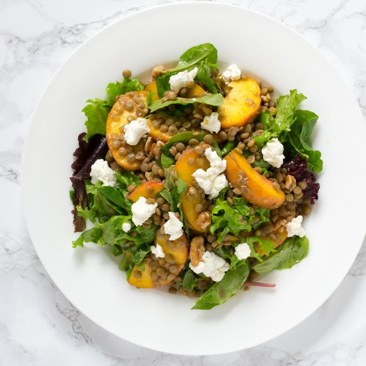

Lentil, Peach & Greens Salad with Goat Cheese & Walnuts

Total Time
40 min
Nutrition (per serving)
579.5 kcalCalories
21.1 gProtein
49.7 gCarbs
35.4 gFat
Full nutrition table
| Calories | 579.5 kcal |
| Total fat | 35.4 g |
| Saturated fat | 7.8 g |
| Trans fat | 0.2 g |
| Cholesterol | 13 mg |
| Sodium | 120.7 mg |
| Carbohydrates | 49.7 g |
| Fiber | 9.1 g |
| Sugars | 15.4 g |
| Protein | 21.1 g |
| Potassium | 792.3 mg |
| Calcium | 101.6 mg |
| Iron | 5.1 mg |
| Vitamin A | 519.8 IU |
| Vitamin C | 16.3 mg |
| Vitamin D | 4.2 IU |
Cookware
Ingredients
- 2 clovesgarlic
- 1 (4 oz) loggoat cheese
- 1 cupgreen lentils, dried
- 4peaches
- 1 (5 oz) pkgspring mix (mixed greens)
- ½ cupwalnuts
- balsamic vinegar
- black pepper
- Dijon mustard
- extra virgin olive oil
- salt
Steps
- Rinse the lentils, then transfer to a small saucepan and cover with hot water (from the tap) by about 2 inches; bring to a boil over high heat.1 cup green lentils
- Wash and dry the fresh produce. (Skip the mixed greens if they came pre-washed.)1 (5 oz) pkg spring mix (mixed greens)
4 peaches - Trim off and discard the root ends of the garlic; peel and mince or press the garlic. Transfer to a small bowl (that will be used to prepare the dressing).2 cloves garlic
- Once the water in the saucepan is boiling, reduce the heat to a simmer and cook the lentils until they are just tender, 15 to 20 minutes. Drain in a colander, rinse under cold water, and set aside to cool and drain further.
- To the garlic, add olive oil, balsamic vinegar, Dijon, salt, and pepper; whisk together and set aside.6 tbsp extra virgin olive oil
2 tbsp balsamic vinegar
½ tsp Dijon mustard
1 tsp salt
½ tsp black pepper - Transfer the greens to a large salad bowl.
- Quarter the peaches lengthwise (around the pit) and twist the quarters to separate, then remove and discard the pit; cut each quarter lengthwise into thin wedges. Add to the salad bowl.
- Roughly chop the walnuts and add to the salad bowl.½ cup walnuts
- Crumble the goat cheese with your hands and place in a small bowl.1 (4 oz) log goat cheese
- Once drained, add the lentils to the salad bowl; toss to combine.
- To serve, divide the salad between plates or bowls, top with the goat cheese, and drizzle with the dressing. Enjoy!